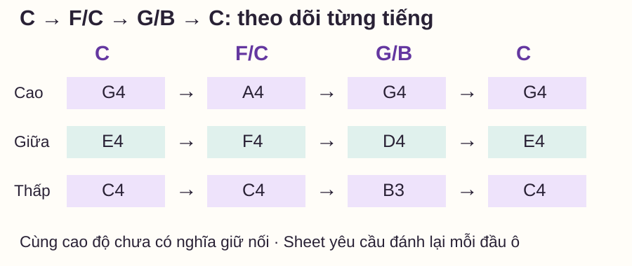
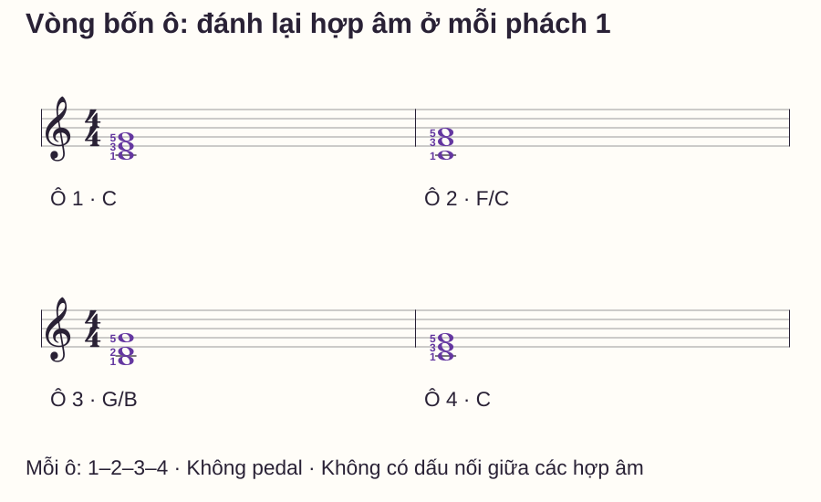

Hợp âm và hòa âm
Vòng hợp âm I–IV–V trên piano: tập C–F–G–C bằng thế gần
# Vòng hợp âm I–IV–V trên piano: tập C–F–G–C bằng thế gần
Bạn biết ba hợp âm C, F, G nhưng mỗi lần chuyển lại phải bê cả hình tay đi xa. Một vòng có cùng tên hợp âm có thể được chơi bằng nhiều cách xếp. Chọn các nốt gần nhau giúp tạo một bài luyện chuyển cụ thể, thay vì chỉ đọc danh sách chữ cái.
Đây là phần hai loạt Hòa âm ứng dụng, tiếp sau đảo hợp âm piano. Bài giải thích bậc I–IV–V, đưa ra một bộ thế tay phải và một sheet bốn ô. Đây là mẫu tập, không phải công thức đệm cho mọi bài hát hoặc bài hòa âm bốn bè.
Trả lời nhanh
Trong giọng Đô trưởng, I là hợp âm xây trên C, IV trên F và V trên G: C trưởng gồm C–E–G, F trưởng gồm F–A–C, G trưởng gồm G–B–D. Bài tập dùng chuỗi C–F–G–C, mỗi hợp âm một ô 4/4. Tay phải lần lượt chơi C4–E4–G4, C4–F4–A4, B3–D4–G4 rồi về C4–E4–G4. Các thành phần hợp âm được giữ đúng nhưng thế thay đổi để giảm dịch tay. Hãy nhận từng cụm, đọc bass và điểm chuyển trước; sau đó đánh đồng thời ba nốt ở phách 1, giữ đủ số đếm và chuẩn bị cụm kế ở tốc độ phù hợp.
I, IV, V là bậc trong giọng nào?
Thang Đô trưởng đi C–D–E–F–G–A–B–C, tương ứng Đô–Rê–Mi–Fa–Sol–La–Si–Đô. Đánh số từ C: C là bậc 1, F bậc 4, G bậc 5. Số La Mã I/IV/V trong bài chỉ ba hợp âm trưởng xây trên các bậc đó trong giọng Đô trưởng.
| Bậc | Tên hợp âm | Các thành phần ở thế gốc |
|---|---|---|
| I | C · Đô trưởng | C–E–G |
| IV | F · Fa trưởng | F–A–C |
| V | G · Sol trưởng | G–B–D |
OpenLearn — Harmony: the triad giải thích hợp âm ba được xây trên các bậc của thang âm. Đổi giọng thì tên hợp âm cho I/IV/V cũng thay đổi; không mặc định mọi giọng đều dùng C/F/G. B trong bài là Si tự nhiên, không phải Si giáng.
Bộ thế được chọn cho bài tập này
C4 là Đô giữa; B3 là Si ngay bên trái C4; A4 là La phía trên G4. Dấu gạch chéo như F/C chỉ bass nằm dưới cùng, không phải hai hợp âm chơi nối tiếp. Tay trái chưa chơi trong mẫu, nên nốt thấp nhất tay phải cũng là bass của toàn cụm.
| Ô | Hợp âm/bass của mẫu | Nốt từ thấp lên | Ngón phải từ thấp lên |
|---|---|---|---|
| 1 | C | C4–E4–G4 | 1–3–5 |
| 2 | F/C | C4–F4–A4 | 1–3–5 |
| 3 | G/B | B3–D4–G4 | 1–2–5 |
| 4 | C | C4–E4–G4 | 1–3–5 |
Ngón 1 cái, 2 trỏ, 3 giữa, 4 áp út, 5 út. Đây là các gợi ý cho bộ thế cụ thể, không áp cho mọi tay hoặc mọi bản. Mỗi cụm nằm trong tầm riêng; cả vùng B3–A4 của bài không có nghĩa là bạn phải giữ hai đầu vùng cùng lúc. Nếu bấm cụm gây gồng, nhả và tìm từng nốt hoặc giảm nhiệm vụ trước.
I/IV/V trong phần giải thích chỉ nhận diện bậc gốc. Phần thực hành có F/C đảo hai và G/B đảo một; khi phân tích chi tiết theo bass cần ghi thêm thế đảo. Không coi nhãn bậc gọn trên bài này là toàn bộ một phân tích hòa âm.
Nhìn ba đường nối thay vì dời một khối cứng

Từ C sang F/C, C4 là cao độ chung, E4 đi lên F4, G4 đi lên A4. Từ F/C sang G/B, các tiếng đi C4→B3, F4→D4, A4→G4. Từ G/B về C, G4 là cao độ chung, B3→C4 và D4→E4.
Yamaha — Pop/Rock Chord Voicings dùng việc chọn cách xếp hợp âm để nối tiếng gần nhau. Tuy nhiên khoảng cách không phải tiêu chí duy nhất: trong bản cụ thể bạn còn xét giai điệu, bass và màu âm. Mẫu này ưu tiên nhận đúng ba đường chuyển, chưa dạy mọi quy tắc dẫn bè cổ điển.
Bài tập bốn ô: một hợp âm mỗi ô

1. Tìm từng cụm chưa bật nhịp
Đọc ba tên từ thấp lên, chạm đúng phím rồi mới bấm cụm. Nghe ba tiếng có cùng bắt đầu không. Có thể nhả và đặt lại tùy ý trong lượt tìm vị trí; không đánh giá lượt này bằng việc giữ phách.
2. Chỉ luyện một lần chuyển
Chọn C→F/C. Quan sát nốt nào đổi rồi đặt F/C, kiểm từng nốt. Làm tương tự F/C→G/B và G/B→C. Mỗi cặp thử hai lượt có đặt lại; chưa cần chạy vòng nhiều lần.
3. Đưa từng cặp vào thời gian
Thử khoảng 50 phách/phút, một click mỗi phách, hoặc thấp hơn nếu chưa kịp chuẩn bị. Đếm một ô trước khi vào. Đánh cụm đầu tại 1, đếm 2–3–4, rồi cụm kế ở 1 tiếp. Cho phép một khoảng tách âm ngắn để chuyển, chưa đòi legato; không rút ngắn cả ô để vào hợp âm sau sớm.
Nếu cần dừng tìm phím, quay về bước tìm vị trí hoặc chọn tempo thấp hơn. Đừng coi khoảng chờ thêm sau số 4 là một phần của mẫu.
4. Nối đủ bốn ô và dừng có chủ ý
Chơi một lượt C–F/C–G/B–C rồi dừng. Tại mỗi đầu ô phải đánh lại đủ ba nốt, kể cả C4 chung ở ô 1→2 và G4 chung ở ô 3→4, vì sheet không có dấu nối. Cuối ô 4, giữ tới số 1 tưởng tượng của ô 5 rồi nhả. Không pedal trong lượt kiểm để nghe rõ các lần đổi.
Tự kiểm: bắt đầu ở ô 3 và kiểm bass
Nghỉ đặt lại, thử bắt từ G/B ở ô 3, sau đó về C ở ô 4. Gọi đủ nốt trước khi đếm chuẩn bị. Trả lời ba câu trước khi xem đáp án:
- F/C ở ô 2 có thành phần nào khác F–A–C không?
- Vì sao ô 3 là G/B, dù ngón út đang đặt trên G4?
- Khi sang ô 4, G4 có phải tự động giữ nối vì cùng cao độ không?
Mở đáp án
1: Không, vẫn là C–F–A, tức cùng ba thành phần F–A–C. 2: Thành phần B–D–G tạo G trưởng, bass thực tế là B3 nên ghi G/B. 3: Không; mẫu yêu cầu đánh lại cụm ở phách 1, kể cả G4, vì không có dấu nối.
Nếu bạn thêm C3 trái dưới F/C ở tay phải, bass toàn cụm vẫn C nên vẫn F/C. Nếu thêm F2 thấp hơn thì cả hợp âm F có bass F, trở thành thế gốc. Thay phần tay trái có thể đổi phân tích thế đảo; bài này giữ một tay để bạn tập rõ từng lựa chọn trước.
Lỗi và cách sửa
| Biểu hiện | Điều cần kiểm | Cách sửa |
|---|---|---|
| Chơi F nhưng vẫn có E từ hợp âm trước | Chưa kiểm thành phần cụm đích | Chơi rời C4–F4–A4 rồi bấm lại |
| G có Si giáng | Nhầm B với B♭ hoặc đổi giọng không rõ | Tìm B3 ngay bên trái C4, đọc lại G–B–D |
| Kéo dài ô 2 để tìm G/B | Thế kế chưa sẵn trong tempo chọn | Tách riêng F/C→G/B, giảm tempo nếu cần |
| Giữ G4 qua đầu ô 4 ngoài ý muốn | Nhầm cao độ chung với dấu nối | Kiểm đầu ô đánh lại cả ba nốt |
| Cho rằng vòng này đệm được mọi giai điệu | Chưa đối chiếu bản nhạc cụ thể | Dùng như bài chuyển; đọc hợp âm/nhịp của bài bạn đang chơi |
Routine mười phút và điều kiện học tiếp
- 0–2 phút: gọi bậc I/IV/V, đọc thành phần và bass của bốn ô.
- 2–4 phút: tìm ba cụm khác nhau, nghe từng nốt và bấm cùng lúc.
- 4–6 phút: luyện cặp khó nhất hai lượt có đặt lại rồi thử theo phách.
- 6–8 phút: nối bốn ô một lượt, ghi vị trí vấp.
- 8–10 phút: tự kiểm ba câu, bắt từ ô 3 rồi về C, thử lại chỗ đã sửa.
Bạn có thể thêm một bass đơn hoặc giai điệu ngắn khi nhận đúng mọi cụm, giữ ô đủ thời gian và bắt được từ ô 3 sau đặt lại. Đó là bước thực hành tiếp theo, không cần tạo tiếng dày hơn chỉ để bài nghe “đủ”. Ôn đảo hợp âm nếu còn nhầm gốc/bass; đếm nhịp nếu lỗi nằm ở độ dài ô.
Câu hỏi thường gặp
I–IV–V có luôn là ba hợp âm trưởng không?
Trong bài này là ba hợp âm trưởng của giọng Đô trưởng. Khi đổi giọng hoặc cách dùng hòa âm, phải xác định lại thang âm, bậc và tính chất hợp âm, không suy rộng từ một mẫu.
Tôi có thể chơi toàn bộ ở thế gốc không?
Có thể dùng C–E–G, F–A–C, G–B–D theo vùng phù hợp. Bài chọn các thế gần để bạn tập một phương án khác và nghe đường nối, không cấm thế gốc.
Vì sao tay trái chưa tham gia?
Để giảm nhiệm vụ và giữ rõ bass đang xét. Khi thêm tay trái, bạn cần đọc cả phần thấp hơn và kiểm xem thế đảo toàn cụm có đổi không.
Chỉ giữ âm chung có dễ chuyển hơn không?
Có thể là một lựa chọn ở bài khác. Sheet này yêu cầu đánh lại mỗi đầu ô, nên hãy làm đúng mẫu trước; nếu muốn giữ nối, cần viết rõ trường độ/dấu nối mới.
Có cần dùng pedal để âm không bị tách không?
Lượt này tập không pedal và chấp nhận tách âm ngắn để chuyển tay. Pedal cần cách đổi phù hợp hòa âm, không dùng để che việc chưa tìm được thế kế.
Có phải đạt 50 BPM mới được học tiếp không?
Không. 50 là tempo thử của protocol này. Dùng mức bạn giữ được nốt và thời gian, rồi mở rộng nhiệm vụ khi kết quả ổn, không theo một con số chung.
Nguồn và ghi chú biên soạn
- OpenLearn — Harmony: the triad: hợp âm ba và bậc thang âm.
- Yamaha — Pop/Rock Chord Voicings, Part 1, Jerry Kovarsky: tham khảo cách chọn thế/nối tiếng, không chép sheet. Đối chiếu ngày 27/10/2026.
- Bộ thế, hình, câu hỏi và routine là thiết kế gốc; chưa có giáo viên độc lập review hoặc thử nghiệm người học, không bảo đảm tiến độ hoặc khả năng đệm mọi bài.